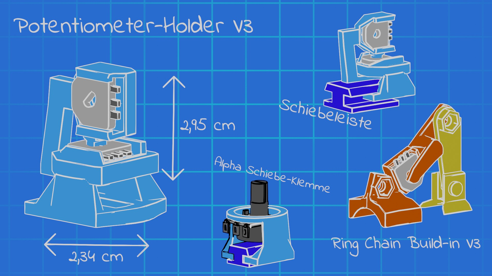
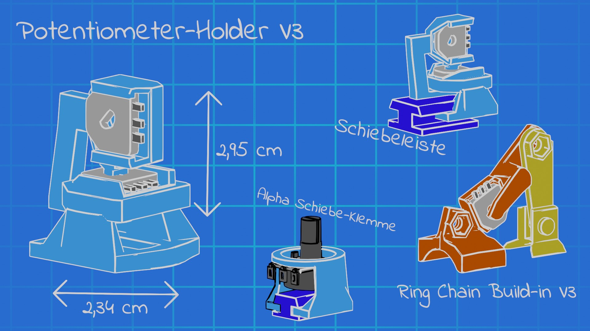

VRonGlove
Der VRonGlove ist ein Open-Source Motion Tracking Handschuh mit Force Feedback. Dies ist das Ergebnis meiner Master-Abschlussarbeit im Studienfach Medieninformatik. Ein Fokus des Handschuhs, die niedrigen Materialkosten, belaufen sich pro paar auf etwa 125€. Das Projekt wurde in der OpenGloves Community aufgenommen und weiterentwickelt.
Schnellüberblick
- Unreal Engine 4
- ESP32
- Bluetooth & Wifi
- Blender
- FDM-3D-Druck
- Einzelprojekt
- Dauer: 6 Moante
Grundproblematik und Konzept
Ich fand es kacke, dass alle Handschuhe, die man so kaufen kann, (für Studenten) so unglaublich teuer sind! Ich wollte sowas endlich mal ausprobieren. Jedenfalls, durch das aufkommen von V-Tuber wie Code Miko und AI Angel wurde ich auf LucidGlove aufmerksam. Ich dachte mir, dass ich das besser kann mit dem Fokus auf Motion Capture, und hab dann darin meine Masterthesis gemacht.
Technischer Hintergrund
Wer sich wirklich genauer dafür interessiert, kann sich mein Thesis sowie das Github Repo gerne anschauen.
Genutzt werden drei Potentiometer sowie einen SG-90 Motor pro Finger, einen ESP32 pro Hand und, je nachdem, ob man Bluetooth oder Wifi zur drahtlosen Kommunikation nutzen möchte, einen ESP32 als Wifi-Empfangs-Dongle.
Unreal Engine liest die Daten aus und rotiert anhand der Daten dann das Rig. An Fingern gibts einen vorrausschauende Hit-Detector, der die Daten wieder an den ESP32 sendet, welcher die Motoren nutzt um die Finger zu blockieren.
Es ist sogar von der Software die Funktion für Vibrationsmotoren bereits eingebaut worden, jedoch habe ich diese an meine Handschuhversion nie angeschlossen.
Probleme des Projekts
Der Handschuh kann mit meiner Software nur in Unreal Engine genutzt werden. Die Adaption in OpenGloves ist jedoch einfach, wodurch der Handschuh für eine Hand voll VR Games auch genutzt werden kann.
.jpg) 
